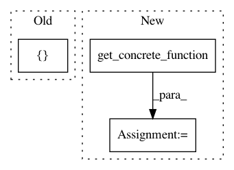

f2088b93ccffa6cb15e4662f23b6fc53f032f6c4,tensorflow_transform/saved/saved_transform_io_v2.py,SavedModelLoader,__init__,#SavedModelLoader#Any#,74
Before Change
respectively).
self._imported = tf.compat.v2.saved_model.load(saved_model_dir,
[constants.TRANSFORM_TAG])
self._wrapped = self._imported.signatures[constants.TRANSFORM_SIGNATURE]
self._input_signature = self._get_input_signature(saved_model_dir)
After Change
else:
self._wrapped = self._imported.transform_fn
self._func_graph = self._get_func_graph_from_v2_saved_model(
self._wrapped.get_concrete_function().graph)
self._structured_inputs = self._get_structured_inputs_from_func_graph(
self._func_graph)
structured_outputs = tf.nest.pack_sequence_as(
self._func_graph.structured_outputs,
self._func_graph.outputs,
expand_composites=True)
self._output_to_inputs_map = (
self._get_output_to_inputs_map(structured_outputs))
def _get_input_signature_from_v1_saved_model(self, saved_model_dir):
In pattern: SUPERPATTERN
Frequency: 3
Non-data size: 3
Instances
Project Name: tensorflow/transform
Commit Name: f2088b93ccffa6cb15e4662f23b6fc53f032f6c4
Time: 2020-07-07
Author: varshaan@google.com
File Name: tensorflow_transform/saved/saved_transform_io_v2.py
Class Name: SavedModelLoader
Method Name: __init__
Project Name: OpenNMT/OpenNMT-tf
Commit Name: a74039320336c858a0b13f5161c0f7fda2f4922b
Time: 2021-03-02
Author: guillaumekln@users.noreply.github.com
File Name: opennmt/tests/tflite_test.py
Class Name:
Method Name: _get_predictions
Project Name: OpenNMT/OpenNMT-tf
Commit Name: a36066dd6aa9012aed3774b658004f8e9d75d7af
Time: 2021-02-24
Author: guillaumekln@users.noreply.github.com
File Name: opennmt/utils/exporters.py
Class Name: TFLiteExporter
Method Name: _export_model